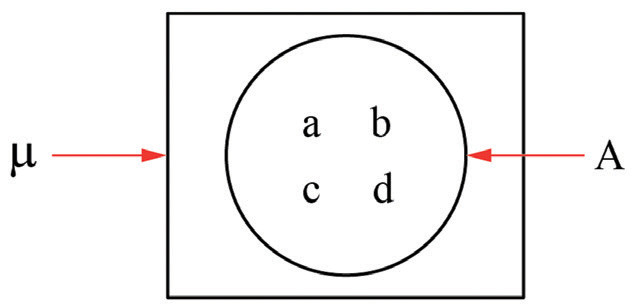
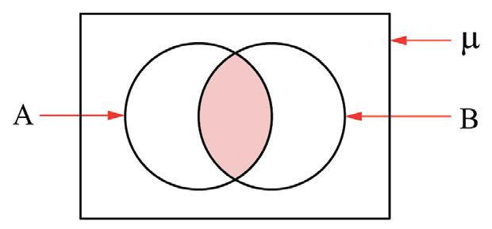
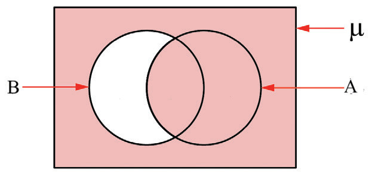
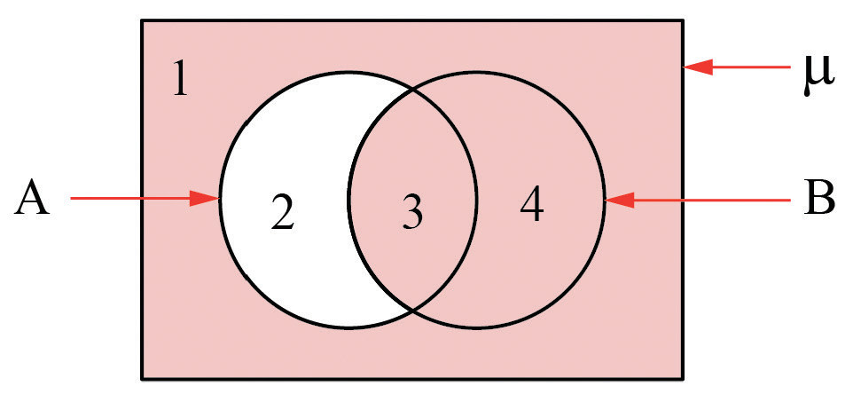

Exercise 7.5

1. (a)
(b) A ∩ B

(c) A ∪ B'

9. 0
10. A ⊆ B.
11. (a) 10 (b) B ⊆ A
12. A and B are disjoint sets
13. 20
14. 30
15. 7
16. (a) 22 (b) 2
17. 14
18. 65 people
19. 32 women
20. 15 households
21. 52 men
22. (a) 61% (b) 3%
23. 15 students.
Revision exercise 7
1. (a) False (b) False (c) True (d) True
2. Statements (a) and (c) represent set A.
3. The set of the squares of the first five natural numbers.
4. A={1, 2, 3, 4, 5, 6, 7}
5. R and S are empty sets
6. A and B are equivalent sets and C and D are equal sets
7. A and D are infinite and B, C and E are finite
8. a ∈ A, b ∈ A
9. 128
10. ∅, {2}, {4}, {6}, {2,4}, {2,6}, {4,6}, {2,4,6}
11. (a) A ⊂ B (b) D ⊂ C
12. (d)
13. (a) A ∪ B = {a, b, c, d} (b) A ∩ B = { }
14. (a) A ∪ B = {1, 2, 3, 4, 5, 6, 7, 8, 9, 10} (b) A ∩ B = {2, 3, 5, 7}
15. A = {1, 4}
16. (a) A' ∩ B' = {} (b) A ∪ (B ∩ A) = {a, b, c}
17. (a) A' ∪ B
